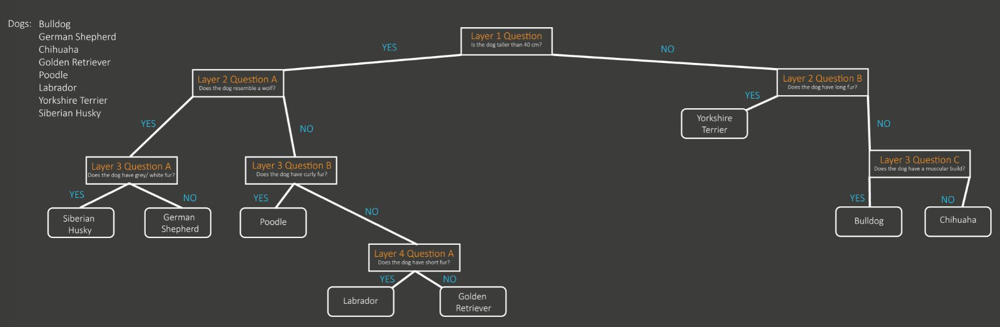
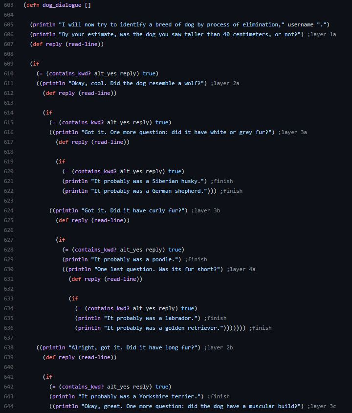

This page serves as a technical report for the second version of the Clojure Chatbot developed by Daniel De Corte, Artem Pyatigorov, Nikita Druzhkov and Vladyslav Koskovetskyi as part of the second in-class assignment for the Symbolic Computation module instructed by Petr Švarný at Prague college in the 2004 semester.
The report documents the improvements and changes made to the chatbot based on feedback provided about the previous version and based on requirements of the ICA2 specification.
The development process has not really changed since the first ICA. The team members still mostly communicated via Discord and worked in short, intense sprints to develop and deliver features. The only major difference from ICA1 and ICA2 was, that for ICA2 the team members had access to feedback, based upon which the project could be further improved.
To start off work on the second ICA, the team members met in a discord group call and discussed the feedback provided about ICA1. Several issues were identified and distributed between the teammembers for solving. Besides this, the team members agreed to set up regular check in meetings, during which progress and problems related to the project were discussed.
Based on the feedback and the planned improvements in the previous technical report, the following changes were made:
1) Improved parsing
2) Ability to switch parks during conversation
3) Improved Error handling
In the second stage, the main focus of the team was on coming up with theoretical models for decision trees and subsequently implementing them. Several approaches were considered, but due to limited available time, Artem's prototype consisting of nested if-statements was utilised. The primary reason for this choice was the relative simplicity of the implementation and also the good scalability.
FIGURE 1: Block of code showcasing decision tree theoretical mode:
FIGURE 2: Diagram showing decision tree implementation:
Stage 3 was primarily about integrating the newly created decision trees into existing code structure. This was no easy task, and after various proposed approaches, the team settled on fundamentally restructuring the body of the code to be more modular and allow for easy scalability and expansion.
This was done by creating a separate dialogue function for each topic the bot is able to have a conservation about. The topics are: Prague parks, dog breeds & trees commonly seen in Czech nature. These component functions were then included in the body of the main function, and are triggered based on what the user chooses after providing his name to the Bot at the beginning of the conversation.
In the fourth and final stage, several hotfixes were applied to fix small, unintended errors and bugs in the code which appeared as unwanted byproducts of the rewriting and resctructuring of various bodies of code.
Admittedly, this stage was somewhat underestimated by members of the team, and many of the fixes were applied last-minute. However, the vast majority of issues affecting the general functionality of the chatbot were resolved.
Once issues were resolved, the finalized version of the code was submitted to the team members for detailed review and scrutiny.
With the finalized code being approved, suitable documentation, including this report and the project README was updated to fully accompany the code.
The current build of the chatbot is a usable program. While the goals for the project were met, and in some areas even exceeded, there are still some aspects which could be improved to make the chatbot truly accessible and usable in the real world
Implementing a GUI would make the chatbot very accessible even to less technically knowledgable users. It would also allow for greater clarity, namely in being able to separate user and bot messages by color coding. Lastly, it would also allow the chatbot to render images. This feature would be especially useful in combination with decision trees, which could verify that, based on the user's input, came to the right conclusion by rendering an image of what conclusion they have come to (e.g. showing an image of a Yorkshire Terrier to verify with the user the estimated breed of dog.)
The decision trees currently in use in the program share a common limitation: they only pose questions with binary-type answers. In order to increase the efficiency of the program by reducing the time spent by the end user, it would be good to create decision trees which can work with several answers to a posed question. While, with the current decision tree methodology used in this project, this may complicate the code and substantially increase its size, it would, in the end, result in a higher quality product for the end-user.
GitHub was selected as the tool for project management, collabotation and hosting early on in the lifecycle of the project. The primary reason for this is the rich selection of features GitHub provides for effective and intuitive project management & collaboration.
Discord was selected as the primary tool for instant communication and discussion about the project due to its numerous features allowing for easy filesharing, screensharing, etc.
The above Github project board was used to keep track of tasks, discuss encountered problems and approaches to them. As seen in the figure, the project board was split into 5 Columns.
The first column serves as a place where contributors can post their suggestions which will be considered for future integration into the project.
The second column is meant for tasks/ problems which the team has committed to solving and implementing. The individual issues sit in this column until a developer assigns them to himself and officially begins work on them.
The third column indicates what issues/ problems are currently being worked on by which developer. The primary purpose it served was the avoidance of unfortunate situations in which 2 developers work on the same issue by mistake, whereby misallocating their time.
The fourth column is for tasks which have been completed and are currently waiting for or under review by another developer. Reviews were done mainly on data and on code and helped spot some inconsistencies, missing data or spelling mistakes.
The final column displays issues which have already been resolved and reviewed. Issues found in this column have already been integrated into the latest version of the product.